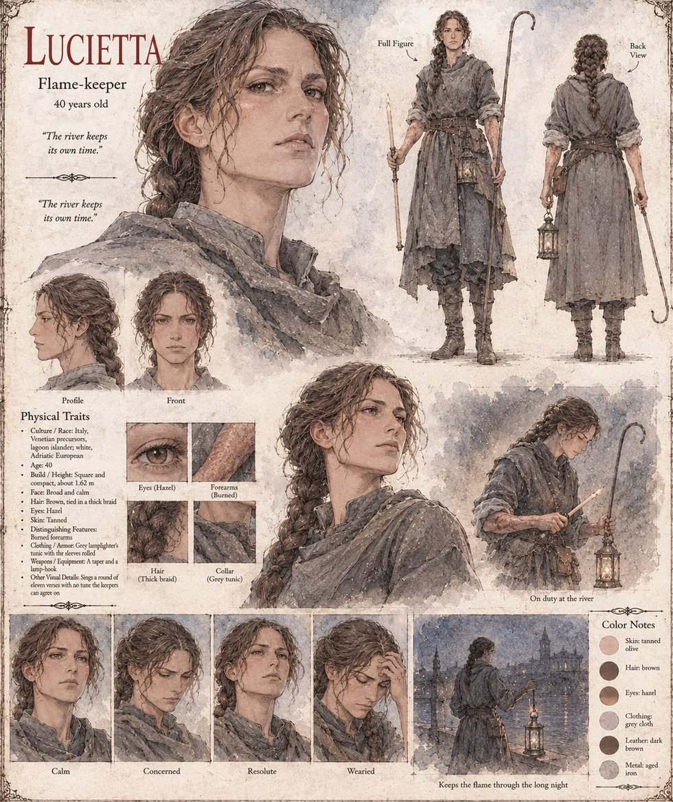

Lucietta
Flame-keeper of Focolare · one of the four river keepers · keeper of a round of eleven verses · 40 on the sheet
Lucietta is a square, calm woman with burned forearms who had brought from the glass-quarter a round of eleven verses and no tune that any of them could agree upon. She is one of the four keepers who carry the flame upriver, and the keepers sing her round at the second watch in turns, in four incompatible keys, until it dissolves into a hum and the river carries it out to both banks, where the black reeds stir and do not answer. When the Ring is lit she runs her stretch in relay behind Nico, with Gasparo and Tomà.
She takes her turn at the Far Lamp, and her replay from the hollow is her round of eleven verses, sung through for the first time in a single key, so that the Listeners, who have heard it come apart across the Ring at every second watch since the boats, sit very still. It is one of the Antiphonary’s entries for the lamplighters of the northern rota.
The manuscript gives her calm, her squareness and her burned forearms, and no age, height, hair or eye colour. The sheet’s age of 40, compact build of about 1.62 m, broad face, brown hair in a thick braid, hazel eyes, tanned skin, grey tunic with the sleeves rolled, taper and lamp-hook are its own, as are its panels Calm, Concerned, Resolute and Wearied and its scenes On duty at the river and Keeps the flame through the long night, the second drawn on a quay at night before a lit tower and city. Its printed line, The river keeps its own time., set twice on the page, is not in the manuscript.
“a square, calm woman with burned forearms who had brought from the glass-quarter a round of eleven verses and no tune that any of them could agree upon”